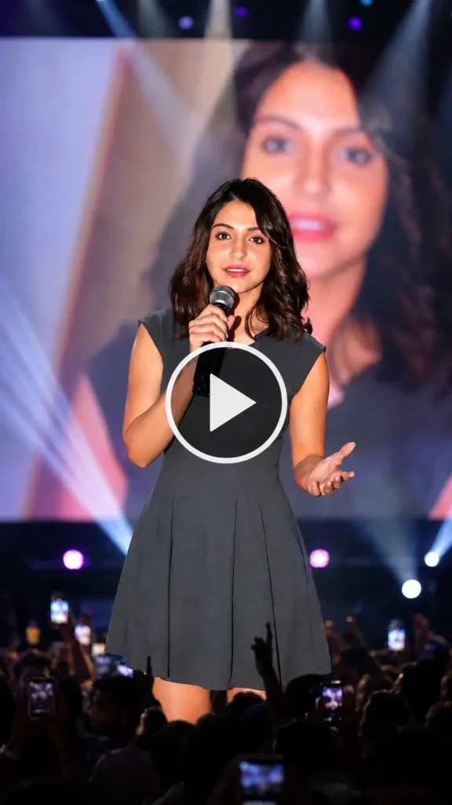

Have you seen those Hindi Shayari videos on Instagram lately? A real person standing on a big concert stage, mic in hand, reciting beautiful Shayari — and it all looks completely real?
That’s AI magic. And today, I’m going to teach you exactly how to make one of these videos yourself. Step by step. No experience needed.
I’ve personally tried this method, and it works really well. The result looks so realistic that people think it’s an actual stage performance. All you need is your selfie, a good prompt, and two free tools: ChatGPT and Google Flow AI.
Let’s get started.
What Is Shayari AI Video Editing?
It’s a trending style of AI content on Instagram right now. In this type of video:
- Your face is placed on a concert stage
- You look like a real Shayar (poet) performing in front of a crowd
- The video shows you speaking or reciting Shayari with realistic lip movement
- The lighting, crowd, and stage all look cinematic and real
This trend started with Nagpuri language videos, but now Hindi Shayari videos are going viral all over India — because Hindi is understood everywhere.
What You Will Need
Before we start, keep these things ready:
- A clear selfie photo (your face should be clearly visible)
- ChatGPT account (free version works)
- Google Flow AI account (free to use)
- A Hindi Shayari you want to use in your video
That’s it. No editing skills needed. No expensive software.
Step 1: Create Your Shayari AI Photo Using ChatGPT
The first thing we need is a good AI-generated photo. We’ll use ChatGPT for this because it keeps your face looking exactly like you — same skin tone, same features, everything.
How to do it:
- Open ChatGPT on your phone or laptop
- Click the “+” (plus) icon to attach a file
- Upload your selfie photo
- Copy the prompt below and paste it in the chat
- Press send and wait a few seconds
Your photo will be ready. Save it to your gallery.
📋 ChatGPT Photo Prompt (Copy This):
Want more awesome prompts?
Join our community and get the latest viral prompts daily.
Follow on Instagram
Tip: If your face doesn’t match well in the first try, take a selfie in good lighting and try again. Clear face = better result.
Step 2: Create the Shayari AI Video Using Google Flow AI

Now that your photo is ready, it’s time to bring it to life. We’ll use Google Flow AI to turn that photo into a realistic video — complete with lip sync and natural movement.
How to do it:
- Go to Google Flow AI → labs.google/flow/about
- Click on “Create Project”
- At the top, click the icon to add your photo (the one you just made)
- At the bottom, click the “+” icon and add your photo there too
- Now type the Shayari dialogue you want the person to say (see below)
- Send it to Flow AI
- Wait a few seconds — your video will be generated
- Click the save/download icon to save your video
Done! Your Shayari video is ready.
🎤 Ready-to-Use Hindi Shayari Dialogues
Copy any one of these and paste it into Flow AI:
Shayari 1:
पागलपन की हंसी में कुछ इशारा छुपा है, रील बनाते वक्त दिल बार-बार पुकारे। तेरी मेठी आवाज़ ने चुपके से छू लिया, दूरियों को करीब लाने का ये सिलसिला है।
Shayari 2:
पागलपन भरी हंसी में दिल खोया है, चिढ़ाने वाली बातों में प्यार सोया है। रील बनाते वक्त राज़ कुछ खुलता है, तेरी मेठी आवाज़ ने सब बदल दिया है।
Feel free to write your own Shayari too. The more personal it is, the better it will connect with your audience.
Why Is This Trend Going Viral?
I’ve been watching content trends for a while now, and here’s what I think makes this style so popular:
- Hindi = Wide reach. Hindi is understood by most people across India. More people can relate to it.
- It looks real. When people see a face on a big stage with a mic, they stop scrolling.
- Emotional connect. Shayari touches people’s hearts. Combined with a real-looking video, the engagement goes up naturally.
- Easy to make. Anyone can do this in under 10 minutes. So more creators are jumping in.
If you post this kind of content regularly, your Instagram or YouTube Shorts can grow fast right now — because this trend is still fresh.
Tips to Make Your Video Stand Out
- Use a bright, clear selfie for the best face match
- Choose Shayari that fits your personality — sad, romantic, or funny
- Post at the right time — evenings (7–10 PM) usually get more views
- Add trending audio in Reels after downloading your Flow AI video
- Write a good caption with your Shayari text — it helps people engage in comments
Conclusion
Making a Hindi Shayari AI video is actually easier than most people think. You just need a selfie, one prompt, and two free tools. ChatGPT makes a stunning photo of you on stage. Flow AI brings it to life with realistic movement.
I personally love this type of content because it combines creativity with AI in a way that anyone can enjoy — you don’t need to be a tech expert.
Try it out, share your video on Instagram or YouTube Shorts, and let it do the work for you. If you have any questions while trying this, drop them in the comments on PromptSeen.com — I’ll help you out.
Frequently Asked Questions (FAQ)
Q1. Is ChatGPT free to use for making this photo? Yes, ChatGPT’s free version can generate images. If you get a limit message, try again after a few hours or use the Plus plan.
Q2. Is Google Flow AI free? Yes, Flow AI is free to use. Just sign in with your Google account and start creating.
Q3. Will my face look real in the video? Yes, if your selfie is clear and well-lit, the face match is very realistic. Avoid blurry or dark photos.
Q4. Can I use my own Shayari instead of the ones given here? Absolutely! You can write your own Hindi Shayari and type it in Flow AI. It works with any text.
Q5. How long does it take to make one video? Roughly 5 to 10 minutes for the whole process — photo creation plus video generation.
Q6. Can I post this video on YouTube Shorts too? Yes! The vertical format works perfectly for both Instagram Reels and YouTube Shorts.
Q7. What if ChatGPT doesn’t keep my face the same? Try uploading a clearer, front-facing photo with good lighting. Also re-read the prompt to make sure it was pasted correctly.
Found this helpful? Share it with a friend who wants to try AI video editing! For more prompts and tutorials, keep visiting PromptSeen.com.